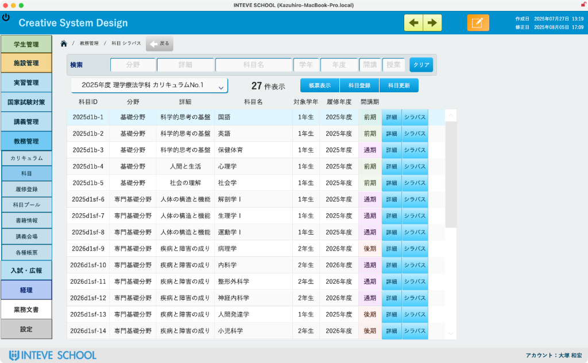
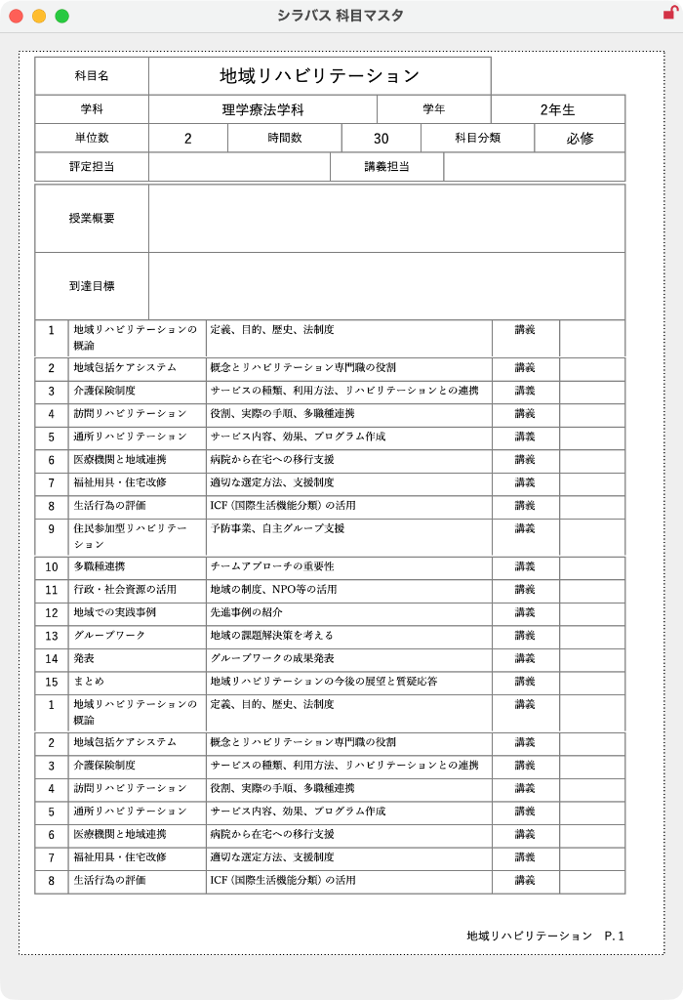
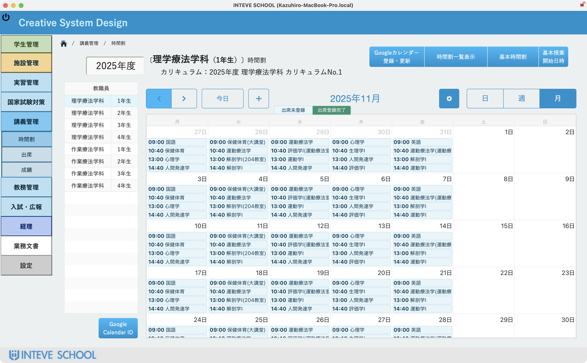
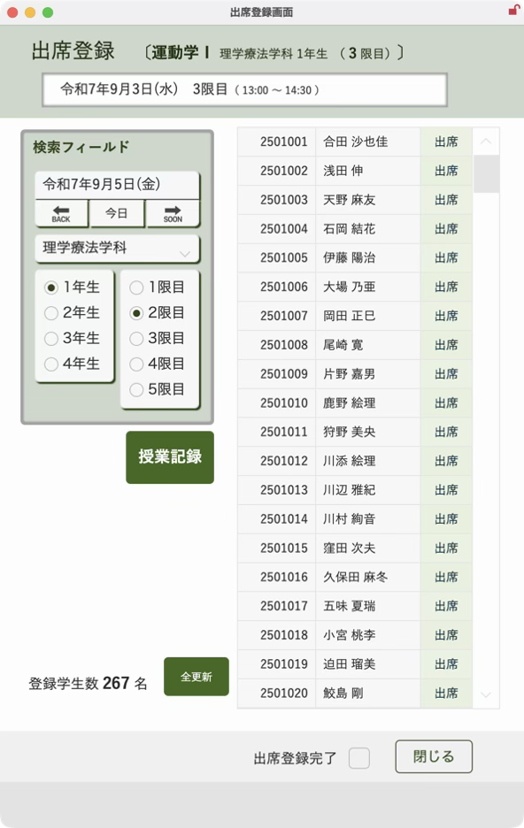
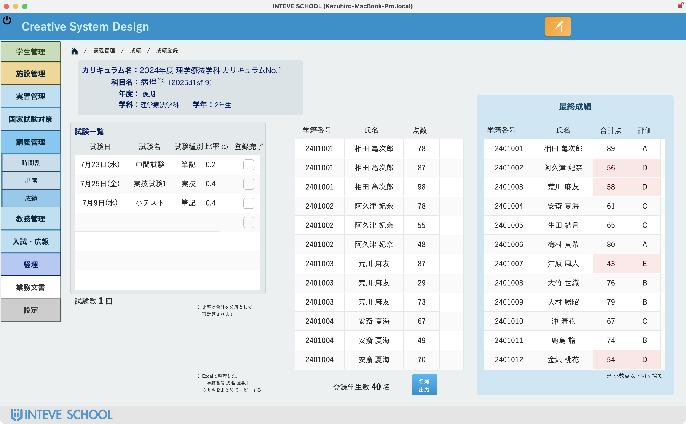
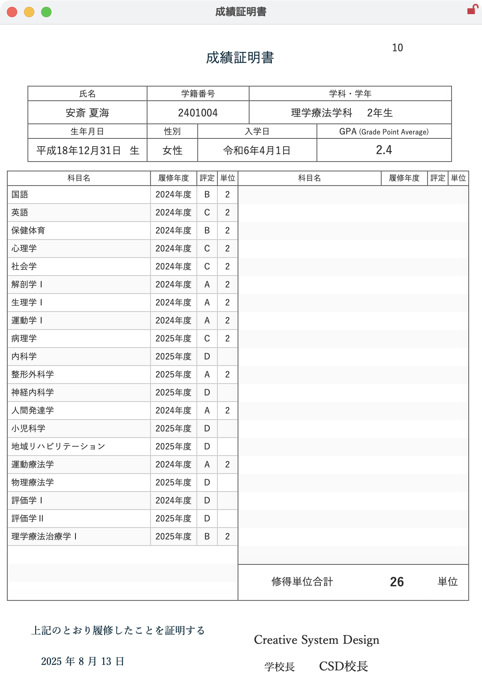

医療系養成校向け 学事システム
「アカデミック・プラス」
教務担当者の煩雑な事務作業を劇的に軽減し、教育の本質に集中できる環境を提供。学生と教職員双方にとって、より良い学び舎づくりに貢献します。
Core Features
カリキュラム、シラバス作成から日々の時間割、出席、成績まで一元管理します。
カリキュラム・シラバス
カリキュラムの構造化から、シラバスの作成・公開までをサポートします。科目情報や授業計画を一元管理し、教務運営の透明性と効率性を向上させます。
時間割・出席管理
直感的な操作で時間割を作成・共有。学生の出席状況も簡単に記録・集計できます。また、時間割のカレンダー登録や変更のお知らせも可能です。
成績管理
複雑な成績評価基準にも柔軟に対応。入力された成績は自動で集計され、成績証明書や各種帳票を簡単に作成。評価作業を効率化します。
カリキュラム作成から、シラバス配布まで
カリキュラム全体の構造設計から、詳細なシラバス作成、そして学生へのWeb配布までを一貫してサポート。科目の関連付けや担当教員の割り当ても直感的に行え、教務担当者の負担を大幅に軽減します。ペーパーレス化も推進し、効率的な学事運営を実現します。




時間割登録から出席管理まで
直感的なインターフェースで、ドラッグ＆ドロップにより時間割を簡単に作成。学生はWeb上で自分の時間割を確認でき、教員は出席状況をリアルタイムで記録・管理できます。急な変更にも迅速に対応し、日々の授業運営をスムーズにします。
成績入力から成績証明書
複雑な成績評価基準も柔軟に設定可能。入力された成績データは自動で集計・計算され、成績証明書や各種帳票をワンクリックで出力できます。評価作業の効率化と正確性の向上を図り、教員の事務作業の負担を軽減します。

